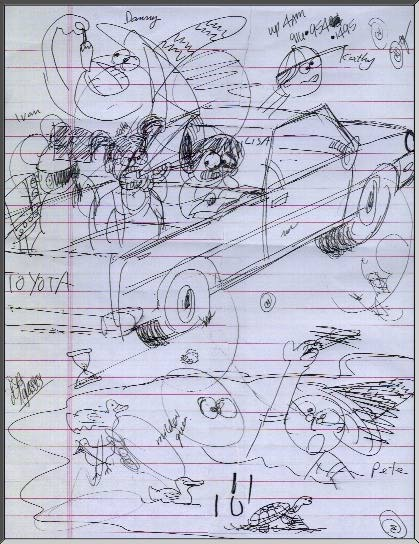
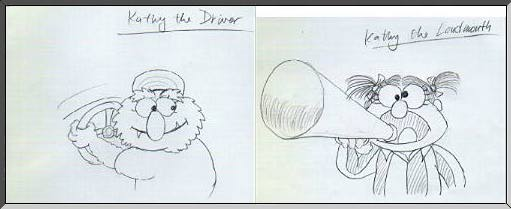
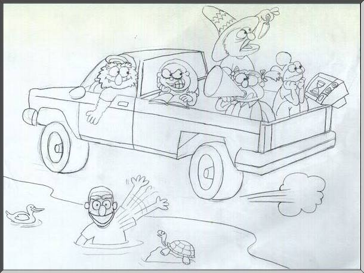
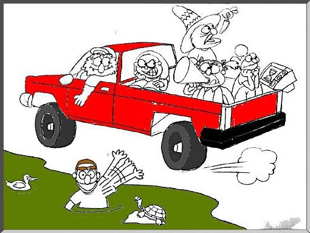
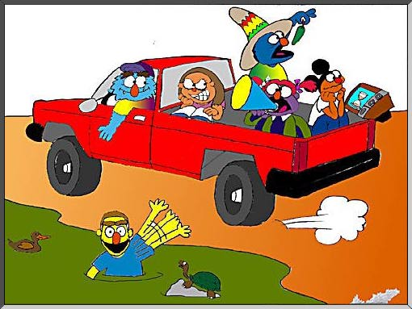

History

History

A good friend of mine approached me to design a thank-you card for her dormitory RA's. The idea was to commemorate a memorable year at Palmitas Hall of Pomona College. During the brainstorming session, it became apparent that the design should capture the essence of each personality and showcase their idiosyncrasies.A personality profile was quickly drafted from my "interview" with Melissa of the subjects whom I've never met.
The image to the left is from the brainstorming sessions where a general scene was composed quickly without worrying about neatness.
Then a few of the characters were prototyped showcasing their respective idiosyncracies...

After a few thumbnail sketches, a pencil sketch of the entire scene was composed and scanned into the digital domain.

Using Adobe Photoshop 2.5.2, the pencil sketch was image-balanced by controlling the contrast/brightness values using the histogram. Once the undesireable graytones were expanded to either white or black, the magic wand tool was used to select areas for filling.

By playing with the magic wand's tolerance value, flood fills were performed to apply color in the selected areas. Notice several small unfilled areas that the magic wand did not pick up. Hunting and pecking in high zoom mode were needed to filled in these areas.

The final image contains gradient fills (to simulate gouraud shading), line smoothing using anti-aliased lines, as well as perspective text and smudging of the smoke.
The final image was generated at 1152x864 resolution in the SGI-RGB format and output to Textronics Phaser II printer for mounting and framing.


{kind=link}